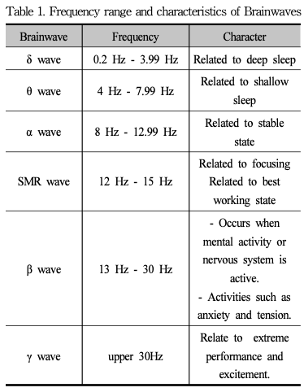
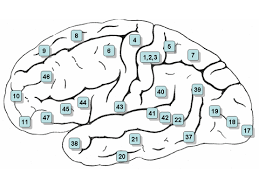
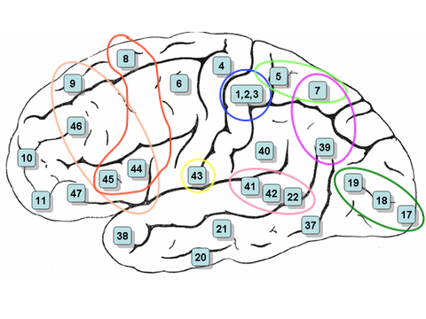
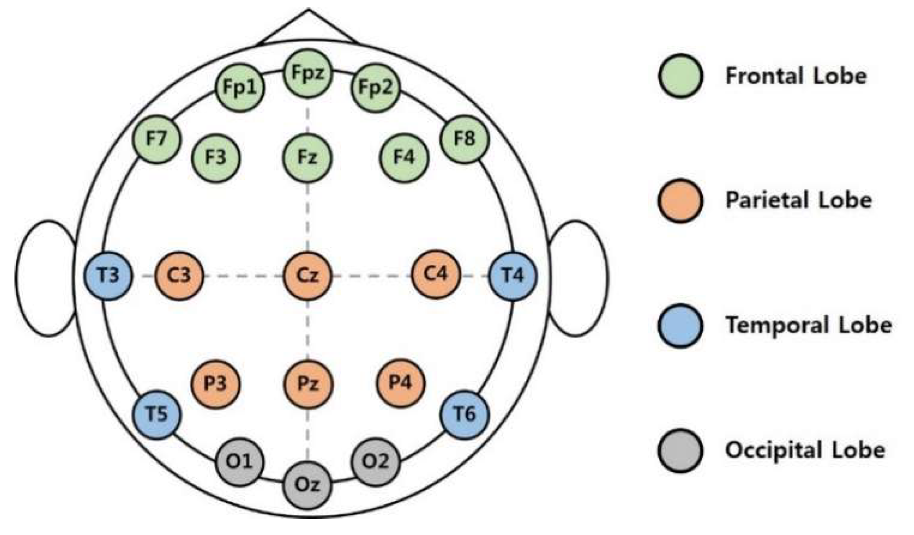
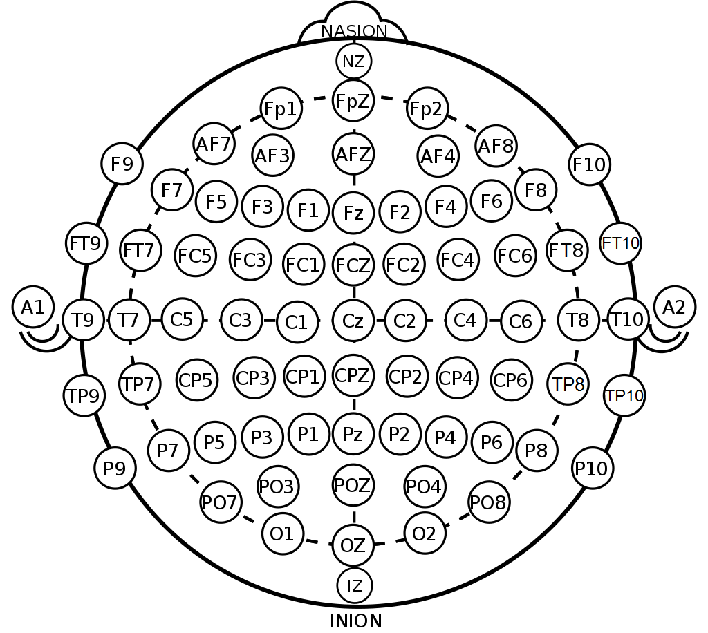
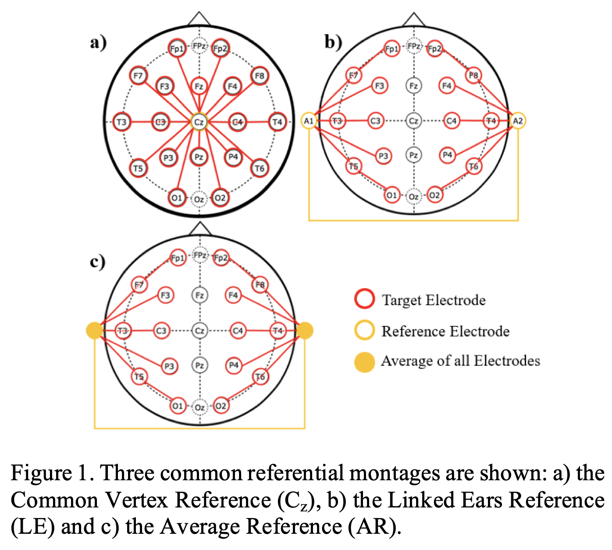

Basics of Electroencephalography for Brain-Computer Interface Developer
요약
뇌파에 관한 많은 기술적 발전에도 불구하고 정확한 뇌파의 측정은 오늘날에도 쉽지 않다.
더욱이 비침습형 뇌파인식기를 이용한 외파의 측정은 정확도가 떨어진다.
하지만 실용적인 뇌-컴퓨터 인터페이스 활용 시스템 개발을 위해서는 사용의 편의성 때문에 비침습형 뇌파인식기를 이용하는 경우가 많다.
특히, 가장 사용하기 편한 비침습형 건식 최파인식기인 경우 뇌파 측정의 정확도가 가장 떨어진다.
본 논문에서는 임상 응용보다는 뇌-컴퓨터 인터페이스 시스템 개발 시 뇌파 측정을 통한 사용자 의도 파악의 정확도를 높이는데 필요한 뇌파에 대한 기초 지식과 특성에 대해 알아본다.
뇌파 측정을 통한 사용자 의도 파악이 정해지면 다양한 분야에서 뇌파의 활용도가 높아지고 새로운 응용 분야도 개척될 것이다.
주제어 : 차세대, 뇌파, 뇌-컴퓨터 인터페이스, 뇌파 측정
1. 서론
뇌파(Electroencephalography, EEG)는 두뇌에 있는 다수의 신경세포가 활성화 되어 발생하는 전기적인 신호인다.
동시에 활성화되는 신경세포의 수가 많고 이들에서 발생하는 전류의 방향이 같다면 전류의 흐름이 커져 머리덮게 부분에서도 측정할 수 있게 되는데 이를 머리덮게 뇌파(Scalp EEG)라고 한다.
1924년 Hans Burger가 뇌파를 기록하고
1925년 머리덮개 부분에서 측정한 전기현상을 바탕으로 뇌파도(Electroencephalogram)를 작성하면서
본격적으로 뇌파연구가 시작되어 1929년 최초의 인간 되파 기록 보고서가 발표되었다.
인간의 뇌파를 연구하기 전에는 동물들을 대상으로 뇌파 연구를 했다.
Hans Berger가 놰파를 발견한 후로 병원이나 실험실에서 신경 장애를 평가하거나,
뇌 기능을 조사하는데 사용되었고 몇몇 연구는 치료 가능성을 탐구했다.
이러한 연구가 발전하면서 뇌파를 해석하여 다른 사람의 생각을 읽어내고 이를 이용하여 주변 장치를 조정하거나 다른 사람과 의사소통할 수 있도록 하는 연구로 발전하고 있다.
뇌 신호를 미리 정의 된 명령으로 변환하여 다른 사람들과 의사소통하거나 외부 장치를 제어하기 위해서는
Brain-Computer Interface(BCI) 또는 Machine-Computer Interface(MCI)라고 하는
뇌-컴퓨터 인터페이스 기술이 필요하다.
초기 BCI는 해상도와 신뢰성이 제한적이었지만 최근에 컴퓨터 기술이 발전해
다채널 뇌파의 정교한 온라인 분석이 가능해지고,
뇌파 관련 임상 연구 결과가 쌓여 뇌파 관련 기술에 대한 과학적, 상업적 관심이 크게 향상되었다.
BCI 응용 시스템 개발시
- 뇌파를 이용한 정확한 사용자 의도 파악
- 뇌파의 정확한 측정
- 측정된 뇌파를 어떻게 해설할 것인지
가 매우 중요하다.
뇌파의 측정과 해석의 신뢰도를 높이는데 필요한 것들은 정확도 높은 뇌파측정기,
신호처리 및 변환 프로그램 등 여러가지가 있으나 기본적으로 뇌파의 특성을 잘 알아야 한다.
본 논문에서 BCI 시스템 개발시 뇌파 측정을 통한 사용자 의도 파악의 정확도를 높이는데 필요한
뇌파에 대한 기본 지식과 특성을 임상 연구자보다는 BCI 시스템 개발자 관점에서 알아보겠다.
2. 뇌파(EEG)의 구성과 사건관련전위(ERP)
특정 시점에 뇌의 특정 위치에서 측정된 전압값과 기준전극과의 전압 차는 시간의 흐름과 함께 파형으로 나타나는데 이를 뇌파라 한다.
뇌파는 진폭, 주파수, 파형 등의 조합으로 구성되며 BCI 시스템 개발을 위해서는 파형보다는 주파수와 진폭에 주목할 필요가 있다.
뇌파는 주파수에 따라 다양하게 구분할 수 있는데, 본 논문에서는 6가지로 나누어 살펴본다.
인간의 뇌에서 나오는 뇌파의 파장은 기본적으로 0~30Hz의 주파수가 나오며 약 20~200µV의 진폭을 보인다.
뇌파의 주파수 영역을 임의로 아래와 같이 분류한다.
- 주파수 4Hz미만 : 델타파
- 주파수 4~7Hz : 세타파
- 주파수 8~13Hz : 알파파
- 주파수 13~30Hz: 베타파
- 주파수 30Hz~ : 감마파
여기서 12~15Hz의 주파수를 갖는 것은 SMR파(Sensory Motor Rhythm Wave)라고 부르며
BCI 시스템 개발에 유용하게 사용될 수 있는 뇌파이다.

사건관련전위(Event-related potential; ERP)는 특정 자극 정보(소리, 영상 등)에 의해 발생하는
유발전이(Evoked Potential; EP) 중에서 인지적 처리가 요구되는 상황에서 발생하는 뇌파이다.
ERP는 발생 시간을 통제할 수 있어서 잘 측정한다면 사용자의 의도를 파악하는데 유용하게 쓰일 수 있는 신호로
반응시간과 극성을 기준으로 구분하여 명명한다.
ERP 파형 성분의 극성은 P로 나타내는 양전위와 N으로 나타내는 음전위가 있다.
ERP는 이러한 극성과 반응시간을 이용하여,
(청각)자극 제시 후 약 50ms 후에 최곳값이 양전위인 경우 P50이라 부르고
자극 제시후 약 100ms 후에 최곳값이 음전위인 경우 N100라 부른다.
이런 ERP는 P50, P200, P300, N100, N170, N200등 다양한데
P300은 대표적인 ERP로 개수를 세거나 버튼을 누르는 등의 행동이 요구될 때
이마엽과 마루엽(두정엽) 사이에서 발생한다.
N170은 얼굴과 관련된 자극으로 뒤통수엽(후두엽)에서 크게 나타난다.
운동관련전위(Movements Related Cortical Potentials; MRCPs)는 몸의 움직임 시작 1500~200ms 전부터
나타나는 뇌전위로 근육이 수축하기 200~500ms전에 나타나는 Bereitschafts Potential(BP)와
BP 발생후 500~50ms 사이에 운동의 계획과 관련하여 발생하는 Negative Slope(NS),
그리고 운동 시작 50ms 후에 발생하는 Motor Potential(MP)로 구성된다.
3. BCI 시스템 개발시 주목할 뇌파의 발생 위치
뇌파는 뇌의 다양한 영역에서 발생하기 때문에 뇌의 영역을 구분하여 설명할 필요가 있다.
뇌의 영역 구분과 이데 대한 설명은 브로드만이 구성한 브로드만 영역을 이용한다.

Brodmann area는 대뇌의 피질에 있는 영역으로,
세포구축(Cytoarchitecture) 즉 세포의 구조와 구성에 따라
겉질47개와 속질 5개 영역을 포함하여 총 52개 영역을 정의하고 위 그림과 같이 번호를 부여한다.
속질 5개의 영역은 뇌의 안쪽에 위치하며 기분, 사고, 운동 통합 등 종합 인지 기능인 집행기능을 담당한다.
하지만 비침습형 뇌파인식기를 이용한 뇌파의 측정시 속질에서 발생하는 뇌파는 측정이 어려우므로
BCI 시스템 개발시 주목할 뇌파의 발생 위치는 겉질 영역이다.
겉질은 크게 보면 아래 그림과 같이 전두엽이라고 하는 이마엽(Frontal Lobe),
두정엽이라고 하는 마루엽(Parietal Lobe), 측두엽이라고 하는 관자엽(Temporal Lobe),
그리고 후두엽이라고 하는 뒤통수엽(Occipital Lobe) 이렇게 4부분으로 나누어 볼 수 있다.

이마엽(Frontal Lobe)은 계획, 판단, 창의성, 추론 등을 포함한 고차원적 사회적 행동과 관련이 있다.
이마엽은 브로드만 영역의 9, 44, 45, 46 등이 집행기능(Executive Function)과 관계가 있고,
브로드만 영역의 8, 32, 44, 45번은 운동기능(Motor Function)과도 관계가 깊다.
마루엽(Parietal Lobe)에 있는 1, 2, 3번 영역은 여러 감각정보들을 받아들이는 역할을 하는
일차 몸감각영역이고 이를 단면으로 잘라 놓고 보면 뇌의 아래 쪽에서 위쪽으로 가면서
혀, 입술, 코, 눈, 손, 몸통 순으로 대응되어 있으며 입술과 손가락은 넓은 대응 부분을 차지한다.
5, 7번 영역은 몸감각연합영역(Somesthetic Association Area)이다.
미각은 43번 영역에서 담당한다.
중요한 자극에 집중하고 선택하는 능력인 주의(Attention)는 7번과 39번 영역과 관계가 깊다.
관자엽(Temporal Lobe)은 청각, 후각 등과 관련이 있다.
브로드만 영역의 22, 41, 42 등이 청각정보를 받아들이고 해석하는 역할을 수행한다.
뒤통수엽(Occipital Lobe)은 시각기능(Visual Function)과 관련이 깊다.
17, 18, 19번 영역이 이에 해당한다.

4. BCI 시스템 개발시 주목할 잡파
두피에서 뇌파인식기를 이용하여 측정된 신호가 모두 뇌에서 발생한 신호가 아닐 수 있다.
이처럼 두피에서 뇌파인식기를 이용하여 측정된 신호이지만 뇌가 아닌
다른 곳에서 발생한 신호를 잡파(Aritifact)라 한다.
잡파는 눈이나 혀움직임 또는 이 부딪치기와 같은 생리적인 요인에 의해서 발생할 수도 있고,
주변 기계장치같은 비생리적 요인으로 인해 발생할 수도있다.
Artifact는 뇌파보다 상대적으로 전위가 강하므로 뇌파인식기를 이용해 측정하기 쉽다.
따라서 BCI 시스템의 효율을 높이기 위해서는 비생리적인 요인의 잡파는 제거해야 하지만
생리적인 요인의 잡파는 잘 활용할 필요가 있다.
-
Sweat Artifact
피부에 땀이 나 전극과 두피접촉면 사이에 저항이 변하면서 발생하는 땀잡파 -
Pulse Artifact
두피아래 있는 동맥에 혈액이 흐를 때 발생할 수 있는 맥박잡파 -
Eyelid Flutter and Blinking Artifact
눈을 깜빡일 때 발생하는 안검잡파 -
Eyeball Movement Artifact
안구가 상하, 좌우로 움직일 때 발생하는 안구운동잡파 -
Glossokinetic Artifact
혀가 움직일 때 발생하는 혀움직임잡파 -
Chewing Artifact
음식물을 씹을 때 발생하는 저작잡파
5. 뇌파 측정을 위한 전극 부착 위치와 몽타주
비촉침 EEG를 위해 머리에 전극을 부착해야 한다.
전극 부착 위치는 국제 10-20 system을 따른다.
10-20 system은 아래 그림과 같이 노드 사이의 거리를 10%, 20% 로 유지를 하기 때문에 붙여진 이름이다.

요즘에는 아래와 같은 개선된 10-20 system을 사용하기도 한다.
개선된 10-20system은 5% 간격을 이용하기도 하여
더 정밀한 측정을 위한 것으로 5%system (10-5 system)라고 부른다.

전극 위치는 영어 알파벳과 숫자를 사용하여 이름을 정한다.
- C : 중앙
- F : 이마엽(전두엽, Frontal Lobe)
- P : 마루엽(두정엽, Parietal Lobe)
- T : 관자엽(측두엽, Temporal Lobe)
- O : 뒤통수엽(후두엽, Occipital Lobe)
그리고 숫자는
- 홀수 : 좌측
- 짝수 : 우측
전극이 중앙선에서 멀어지면 숫자가 커진다.
뇌파 인식기는 서로 다른 두 전극 - 입력 채널 G1(Grid 1)과 G2(Grid 2) - 의 전압 차이를 측정한다.
활성전극(Active Electrode) G1과 전기활동이 거의 없는 기준전극(Reference Electrode) G2
사이의 전압 차(G1 - G2)를 기록하는 것을 기준전극 유도 또는 단극성유도(Monopolar Derivation)라 한다.
이때 기준전극은 활성이 0에 해당하면 가장 좋지만
실제로 이러한 경우는 거의 불가능하므로 전압이 비교적 일정한 귀나
Cz(central midline placement of electrodes in electroencephalography)를 기준전극으로
사용하는 경우가 많다.
그리고 서로 다른 두 전극의 전압 차를 비교하여 기록하는 것을 양극성 유도(Bipolar Derivations)라 한다.
양극성 유도의 경우 입력되는 두 전극 G1과 G2는 서로 인접해 있는 경우가 많다.
이렇게 측정된 특성 시점의 전압 차는 G1-G2 값으로 기록되고 시간의 흐름과 함께 파형으로 나타나고 이를 뇌파라 한다.
몽타주는 뇌파 측정을 위한 전극 배열을 조합한 패턴으로
뇌파 측정 영역의 공간적 구조를 나타내는 EEG 채널의 표현이다.
몽타주는 크게 단극성유도를 이용하는 참조 몽타주(Reference Montage)와
양극성 유도를 이용하는 비교 몽타주(Differential Montage)로 나눌 수 있다.
예를 들어 Fp1, F3, C3등을 G1으로 하고 Cz를 G2로 하여 각각의 전압의 차이를 측정하면
아래 a같은 Cz를 기준으로 하는 참조 몽타주가 되고
b,c와 같은 귀를 기준으로 하는 참고 몽타주가 된다.

| 장점 | 전체 위상관계를 파악하기 좋다 | 전극간 위치가 멀지 않기 때문에 신호 발생 위치를 비교적 정확히 측정할 수 있다 |
| 단점 | 미세한 국소적 위치에 따른 전압의 차이나 정밀한 초점의 확인이 어렵다 |
이웃한 전극에서 비슷한 전압이 측정되면 신호 발생을 알아내기 어렵다 |
BCI 시스템 개발을 위해서는 시스템의 목적에 따라 필요한 뇌파 측정을 위한 적절한 몽타주를 만들고
전극 부착 위치를 정확히 결정해야 한다.
예를 들어, 시각정보에 반응하는 뇌파를 측정하기 위해서는 Oz를 활성전극 G1으로 하고
A1이나 A2를 기준전극 G2로 설정하는 것이다.
그리고 사용자의 정확한 의도를 알아내기 위해서는 사용자의 의도에 따른 정확한 신호를 발견해야 한다.
이러한 정확한 신호 발견을 위해서는 여러 몽타주에 따른 뇌파를 각각 기록하고 서로 비교하여
사용자의 의도와 뇌파 간의 상관도가 높은 뇌파 내의 특징들을 발견해야 한다.
6. 결론
디지털시스템이 보편화되면서 몽타주의 변화, 주파수 필터링 등
다양한 변화를 실시간으로 적용하면서 뇌파를 기록하고 비교 연구하기 편하게 되었다.
앞으로 이러한 뇌파에 관한 연구는 더욱 활성화되고 임상적 응용뿐만 아니라
BCI 등 그 적용 범위가 확대될 것으로 예측된다.
본 논문에서는 뇌파에 관한 세부적 임상 관련 지식은 생략하고
BCI 시스템 개발 시 필요한 뇌파에 대한 기초 지식과 특성을 알아보았다.
이는 의학이 아닌 공학 기반의 연구자들이 뇌파를 기반으로하는 다양한 시스템 개발시 유용한 참고자료가 될 것이다.
향후 연구에서는 다양한 환경에서 여러 영역의 뇌파를 실제 측정하고 서로 비교하여
사용자의 의도와 뇌파 간의 상관도가 높은 뇌파 내의 특징들을 발견하여 효과적인 BCI 시스템 개발에 활용하도록 한다.